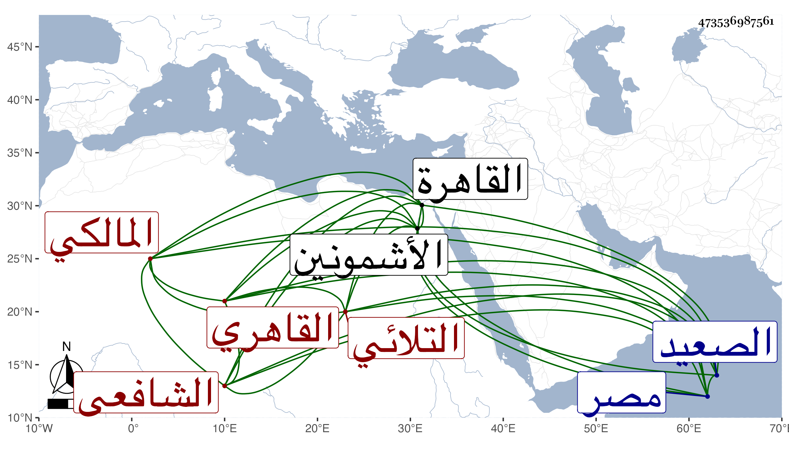

0902Sakhawi.DawLamic.ITO20230111-ara1.EIS1600.473536987561
Biography ID: 473536987561
572
محمد بن علي بن مسعود بن عثمان بن اسمعيل بن حسين الشمس بن النور التلائي بالتشديد ثم القاهري الشافعي هو المالكي أبوه ويعرف بالتلائي نسبة لقرية تلا من عمل الأشمونين بأدنى الصعيد . ولد بها قبل سنة سبعين وسبعمائة تقريبا وقرأ بها القرآن على أبيه ثم تحول في حياته إلى القاهرة مهاجرا في طلب العلم فاشتغل أولا على مذهب أبيه مالكيا وحضر دروس خلف المالكي ثم تحول شافعيا وحضر دروس الأبناسي والبلقيني وابنه الجلال وقريبه أبي الفتح وابن الملقن والبرهان القدسي وغيرهم وكذا حضر دروسا في النحو عند عبيد البشكالسي والشمس الغراقي في آخرين وسمع على الزفتاوي وابن الشيخة والتنوخي والمطرز والحلاوي والسويداوي والغراقي و الهيثمي والأبناسي والغماري والمراغي والتقي الدجوي والشرف بن الكويك والتاج بن الفصيح وناصر الدين نصر الله الحنبلي في آخرين ، وأجاز له جمع من الشاميين ، وكتب التوقيع في ديوان الإنشاء وأم بالقصر من القلعة بل ناب في القضاء عن الجلال البلقيني وتنزل في سعيد السعداء وحدث بالبخاري وغيره سمع عليه الفضلاء ، أخذت عنه أشياء ، وكان خيرا مديم التلاوة بحيث كان تلائيا حسا ومعنى مع التهجد والمحافظة على الجماعة والانجماع والحفظ لكثير من كرامات الصالحين ، وله نظم كتبت بعضه في المعجم . ومات في ثاني المحرم سنة سبع وخمسين بمصر القديمة رحمه الله وإيانا .
